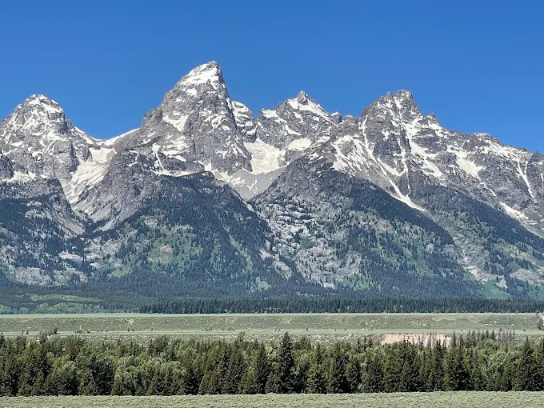
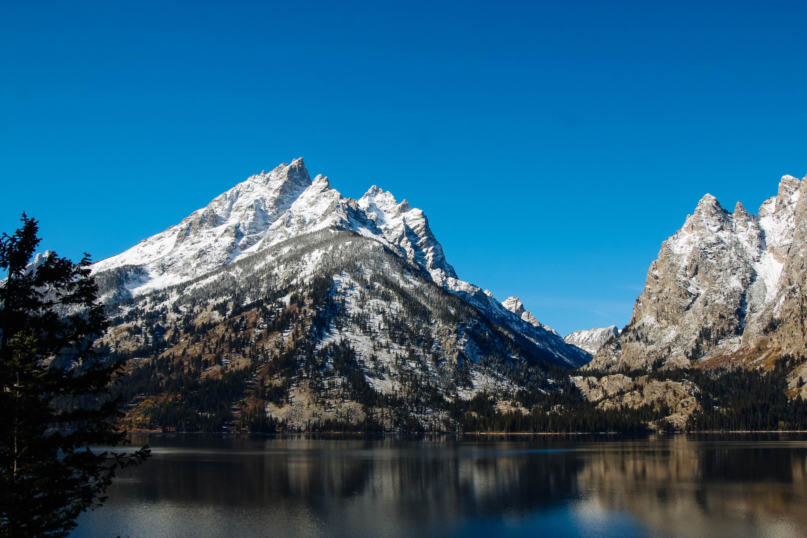
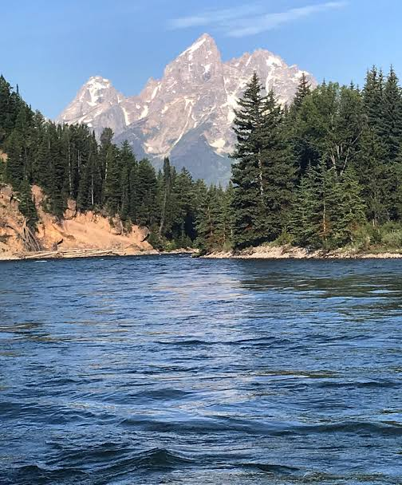

About Grand Teton National Park
Grand Teton National park is in Wyoming and just south of another famous park Yellowstone National Park, the park was established in 1929 and it is known for its jagged peaks. The park has beautiful lakes that are crystal clear and surrounded by pine trees and all types of other trees. Visitors can see the peaks of these towering peaks from afar. There is also popular destinations within the park such as Jenny Lake and the Snake River.
Wildlife in Grand Teton
Moose
Moose are some of the largest animals that can be found in Grand Teton National Park standing at around 6 feet tall not even counting their antlers. Thes creatures can be seen near rivers or near wetlands where they graze on the plants.
Bison
Bison are very large mamals that can be seen in this park, they can bee seen in the open grasslands. They are easily the most recognizable animals in the park.
Grizzly Bears
Grizzly bears are some of the most well known predators in this park. They can be seen in the forest, meadows or other areas within the park. They are very dangerous animals and it is in everyones best interst to stay way from them
Explore the Scenery



Things to Do
Outdoor Activities
Grand Teton National Park offers an assortment of different things to do such as hiking which is one of the most popular things. The trails in this park lead to lakes, forests and breathe taking mountain views. Visitors can also go kayaking int and boating in certain locations of the park. This is a very popular park for individuals looking to explore the outdoors more druing the summer with its warm days and cold nights.